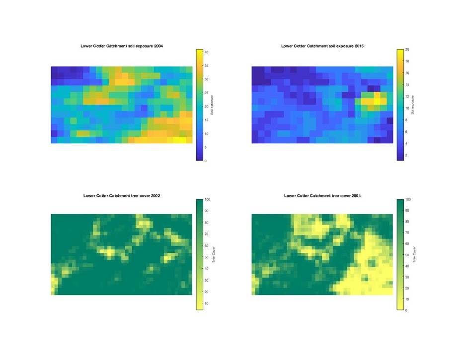

Analyzing Landscape Conditions and Fire Impacts in Australia using Remote Sensing and MATLAB
Through this project, I gained valuable knowledge about the conditions of the landscape in Australia and the impact of frequent fires on its ecology. In South-west Australia, dry seasons lead to an abundance of flammable materials, resulting in uncontrollable fires that significantly impact the landscape. Remote sensing data analysis has become a crucial tool for post-fire management in Australia.
The objective of this project was to evaluate the conditions of the Lower Cotter Catchment landscape before the 2003 bushfire and under current landscape management that considers economic, social, and environmental values. We evaluated changes in tree cover, soil exposure, soil moisture, and above-ground carbon biomass by comparing the conditions during and after the bushfire.
To evaluate the landscape's conditions, we obtained NetCDF data from the NCI data portal and analyzed it using MATLAB. We sub-sampled files for tree cover, soil exposure, and soil moisture to establish the area of interest. Our data interpretation and manipulation within MATLAB allowed us to map and visualize the different conditions of the landscape, resulting in a code that allows for easy visualization. Our analysis showed that the area's tree cover significantly decreased after the bushfire, resulting in changes in landscape composition and ecosystem functioning. This project demonstrates the effectiveness of remote sensing data analysis for ecological applications and provides valuable insights for landscape management approaches when facing natural disasters such as bushfires.
This project has been incredibly valuable for me in terms of enhancing my skills in MATLAB and remote sensing. Prior to working on this project, I had limited experience in both areas, but through the process of analyzing the NetCDF data and manipulating it within MATLAB, I have gained a much deeper understanding of both tools.
By subsetting the files and using various functions within MATLAB, I was able to visualize the conditions of the landscape before and after the bushfire, which has greatly improved my ability to work with large datasets and conduct spatial analyses. Additionally, I now have a much better understanding of how remote sensing data can be used for ecological applications, and how it can inform landscape management strategies.